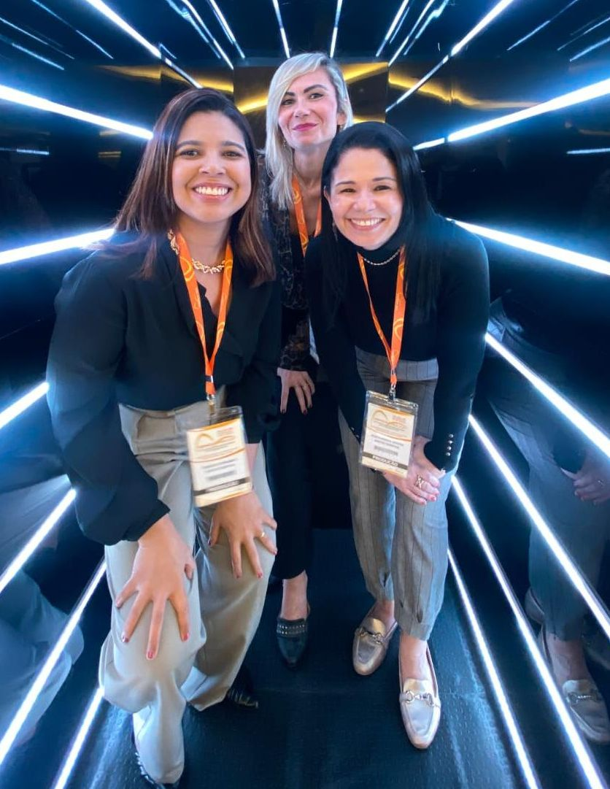
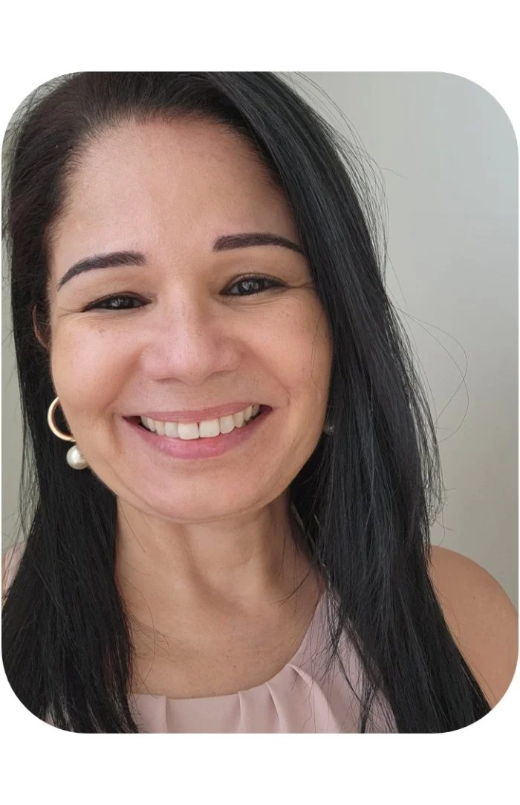
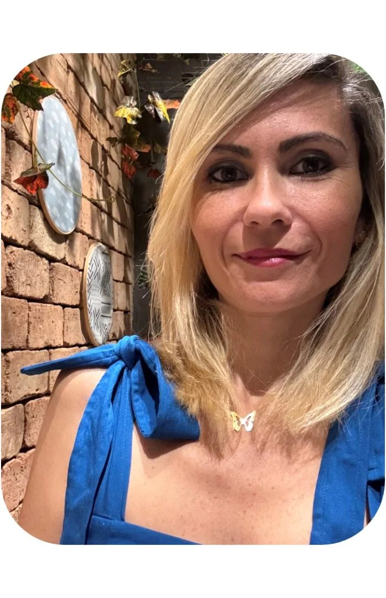
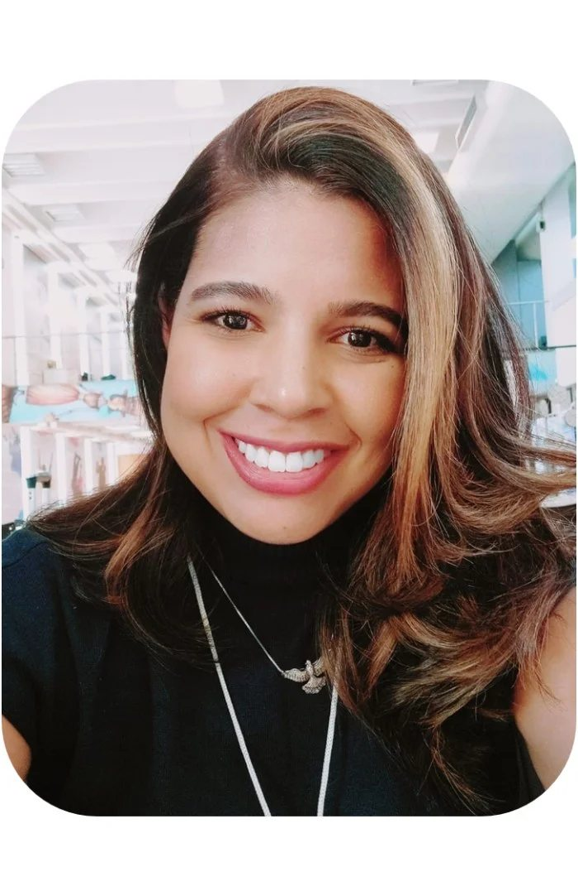

Eventos Corporativos
Congressos, convenções, simpósios, treinamentos, seminários e workshops.
Nascemos do propósito de unir, conectar e realizar.

A JUNTOS Produções & Eventos nasce do propósito de unir, conectar e realizar. Somos formados por uma equipe que atua em total sintonia há mais de 15 anos, especializada no planejamento, organização e produção de eventos presenciais, online e híbridos.

Nossa bagagem inclui o desenvolvimento completo de:
Congressos, convenções, simpósios, treinamentos, seminários e workshops.
Jantares comemorativos, coquetéis e festas de confraternização.
O nosso grande diferencial está no próprio nome: nós trabalhamos junto com você. Acreditamos que um evento de sucesso não nasce pronto, ele é construído através de escuta ativa e planejamento estratégico.
Ouvimos, perguntamos e entendemos exatamente o que a sua empresa espera e precisa.
Analisamos cada necessidade para apresentar soluções reais, criativas e que respeitem as possibilidades orçamentárias do projeto.
Não importa se este é o primeiro evento da sua empresa ou uma edição de um projeto que já existe. Cada detalhe será elaborado com o entusiasmo, o empenho e o cuidado de uma primeira vez — tornando a sua entrega única e especial.
Transformamos visão em realidade através de metas claras e gestão financeira precisa.
Atendimento humanizado e dinâmico, porque organizar um evento muitas vezes não é a atividade principal do promotor.
Sua única função será aproveitar o momento. Entregamos excelência profissional em cada etapa para que você seja o convidado de honra do seu próprio evento.
Somos 3 cariocas, com características e signos bem diferentes — mas muito mais do que simples palavras ou competências podem nos descrever.
Juntas já provamos que somos muito mais! Juntamos a formação e a expertise de cada uma e o domínio de cada função, e colocamos tudo em prática. Escolher a JUNTOS é ter um atendimento diferenciado, dedicado aos detalhes e especial para não apenas suprir, mas superar as suas expectativas.

Carioca, taurina e apaixonada pelo sol, pelo mar e pela noite. Gosta de viver e de curtir a vida em família e com amigos. Gosta de praticidade e estabilidade. Cheia de sonhos, alguns realizados e muitos outros para realizar.
Mãe, esposa, filha, irmã, amiga. Alguns dizem que é um pouco mandona e que é dona de um bom senso de humor.
Formada em Comunicação Social, com foco em Publicidade e Propaganda e especialização em Marketing. O primeiro estágio foi em uma empresa promotora de eventos, focada em promoção e merchandising e ações de sampling.
Eventos foi paixão à primeira vista, um caso de amor eterno, e lá se vão quase 30 anos de experiência, atuando diretamente na produção de congressos e eventos.

A mãe do Lucas, o “príncipe da mamãe”. Determinada, companheira, focada, ágil e certeira nas respostas, como uma boa e autêntica capricorniana — uma mulher equilibrada, com objetivos.
Carreira e família são os pontos centrais da sua vida, mas ela sempre vai achar uma brecha para encaixar uma viagem e, quem sabe, uma volta ao mundo. Quando quer algo, vai até o fim — obstinação é o seu segundo nome.
Com graduação em Turismo e pós-graduação em Administração Estratégica, uniu sua vocação natural à gestão de negócios. Iniciou a trajetória na hotelaria, dedicou-se por 13 anos a agência de turismo e se consolidou como organizadora de congressos e eventos, somando mais de 22 anos nesses segmentos.

A libriana mais centrada possível: nada abala, tudo vai se resolver — e ela resolve. Possui um forte senso de certo e errado e tende a ser imparcial em suas decisões, mas sempre justa.
Mãe e madrasta, sabe bem equilibrar os desafios da vida. Evoluiu em suas funções por quase 20 anos na mesma empresa, acompanhando as mudanças e as inovações tecnológicas ao longo da jornada.
Pode convidá-la para um social que ela sempre topa, levando sua paz e o seu charme — afinal, quem não adora conversar com os amigos e fazer novas amizades?
Para nós, cada evento é único. Por isso, escalamos nossa equipe com profissionais qualificados e prontos para atender a qualquer nível de exigência.